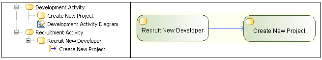

The source and the target of an ActivityEdge must be owned by the same Activity.

In this example, the ControlFlow is invalid because it has its source in the “Recruitment” Activity and its target in the “Development” Activity.
When you get a R1030 error, you can fix it by:
You can also use a CallBehaviorAction node to refer to a Behavior (i.e. an Activity, an Interaction or a CommunicationInteraction) from another Activity.